Благодарим Вас за приобретение шаблона WordPress. Данная документация состоит из нескольких частей и охватывает весь процесс установки и настройки веб-сайта WordPress с нуля.
Что представляет собой WordPress CMS?
WordPress - это бесплатное программное обеспечение с открытым исходным кодом для создания блогов и система управления контентом (CMS) на основе PHP и MySQL. Она позволяет создавать веб-сайты и мощные онлайн приложения, а также почти не требует технических навыков или знаний в управлении. Множество особенностей, в том числе простота использования и расширяемость, сделали WordPress наиболее популярной программой для веб-сайтов. Детали
Что такое шаблон WordPress
Шаблон WordPress - это тема для платформы WordPress CMS. Другими словами, вы можете легко изменить внешний вид веб-сайта WordPress путем установки нового шаблона за несколько несложных шагов. При всей своей простоте, шаблон WordPress содержит все необходимые исходные файлы, которые можно редактировать желаемым образом.
Структура шаблона
Приобретенный комплект шаблона состоит из нескольких папок. Проверим содержимое каждой папки:
documentation - содержит файлы документации.
documentation.html - основной файл документации. Вы его сейчас читаете :)
screenshots - содержит скриншоты шаблона. Для работы с шаблоном они не требуются.
sources.zip - содержит исходные файлы темы.
psd - исходные файлы шаблона для Adobe Photoshop(.psd).
theme - содержит файлы темы WordPress.
CherryFramework.zip - архив с темой Cherry Framework. Включает все файлы темы. Необходимо устанавливать через менеджер расширений WordPress.
theme####.zip - архив с темой (дочерняя тема). Содержит все файлы темы. Необходимо устанавливать через менеджер расширений WordPress.
sample_data - содержит файлы, которые используются для того чтобы сделать сайт WordPress таким же, как наше демо.
sample_data.xml - включает все демо-данные шаблона (записи, страницы, категории и т.п.).
widgets.json - файл настроек виджетов.
различные изображения и другие медиа файлы
manuall_install - содержит файлы, которые используются для того чтобы сделать сайт WordPress таким же, как наше демо.
uploads - содержит изображения темы.
theme#####.sql - файл базы данных (вмещает контент темы).
license.txt - файл с информацией о лицензии.
fonts_info.txt - файл со ссылками на скачку шрифтов, используемых в шаблоне.
info.txt - инструкции по разархивированию исходных файлов.
Подготовка
Прежде чем перейти к установке веб-сайта WordPress, нужно полностью подготовиться. Рекомендуется выполнить следующие подготовительные шаги:
Программное обеспечение
Для полноценной работы с шаблоном WordPress мы рекомендуем скачать все требуемые приложения. Список необходимого программного обеспечения находится на странице предпросмотра шаблона.
Требования для различных шаблонов могут меняться, поэтому мы перечислим самые основные:
Прежде всего нужны правильные приложения для распаковывания защищенного паролем архива sources_#########.zip. Можно воспользоваться WinZip 9+ (Windows) и Stuffit Expander 10+ (Mac).
Также может понадобиться программа Adobe Photoshop. Она используется для редактирования исходных файлов .PSD и необходима, если требуется изменить графический дизайн и изображения шаблона.
Для редактирования исходного кода файлов шаблона нужно использовать редактор кода, например Adobe Dreamweaver, Notepad++, Sublime Text и т.п.
Чтобы загрузить файлы на хостинг сервер, потребуется FTP менеджер, например Total Commander, FileZilla, CuteFTP и т.д.
Хостинг
Поскольку WordPress CMS является приложением PHP/MySQL, необходимо подготовить хостинг сервер.
При наличии активного сервера, нужно проверить его на соответствие требованиям WordPress и на готовность использовать веб-сайты WordPress.
Также можно установить WordPress на компьютер при помощи локального сервера. Для создания локального хостинг сервера необходимо использовать программное обеспечение WAMP, AppServ, MAMP и т.п. Любое из них устанавливается как обычная программа и поддерживает WordPress.
Вы можете воспользоваться следующими туториалами для настройки локального сервера:
Установка шаблона еще никогда не была настолько проста. Процесс установки включает в себя всего три шага: установка Cherry Framework, установка дочерней темы и установка демо-данных.
Все этапы установки выполняются в админ-панели WordPress. Это делает процесс удобным и быстрым.
Установить тему теперь возможно двумя способами.
Первый, используя плагин Cherry Wizard.
Второй, вручную распаковав архив темы.
Установка плагина Cherry Wizard
Войдите в панель управления WordPress.
Откройте вкладку Plugins (Плагины).
Перейдите в Add new(Добавить новый)
Введите название "Cherry Wizard" в поле "Search plugin"
После обновления результатов поиска, выберете Install Now(Установить плагин) и утановите плагин.
Нажмите кнопку Activate (Активировать) в плагине "Cherry Wizard"
После активации выводится нотайс с предложением начать установку Begin installation либо скрыть Dismiss
Ввод лицензионных данных
В поле Theme Name (Название темы) введите название темы.
В поле Activation key (Ключ активации) введите название лицензионный ключ.
Если вы не покупали темы, у Вас есть возможность установить "or try try a Demo theme" (Демонстрационную тему)
Скачивание и установка фреймворка и плагинов
В случае несоответствия рекомендуемым параметрам настройки сервера, будет выведенно сервисное сообщение
Рекомендуемые и текущие параметры
В процессе установки можно просмотреть детали установки каждого плагина или компонента фреймворка
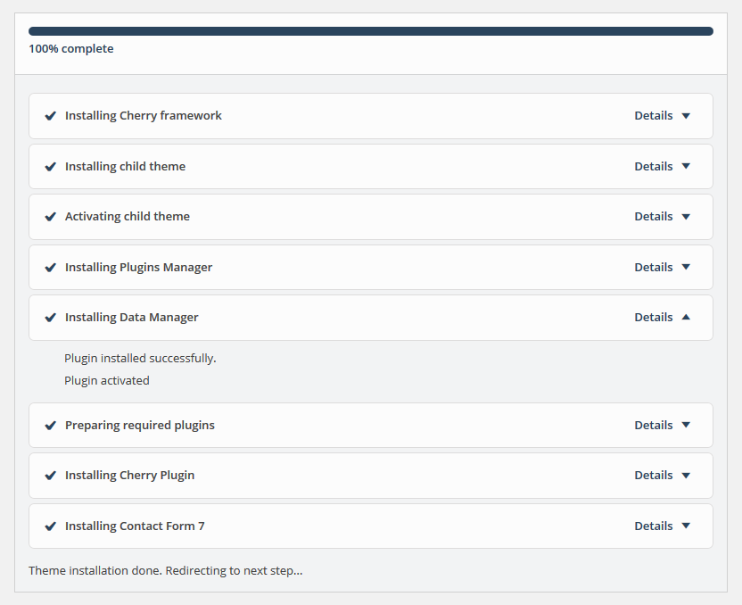
После установки будет произведен автоматический редирект на следующий шаг
Скачивание и установка файлов темы
На следующем шаге вы можете установить sample data с облака, с вашего компьютера, либо пропустить данный этап
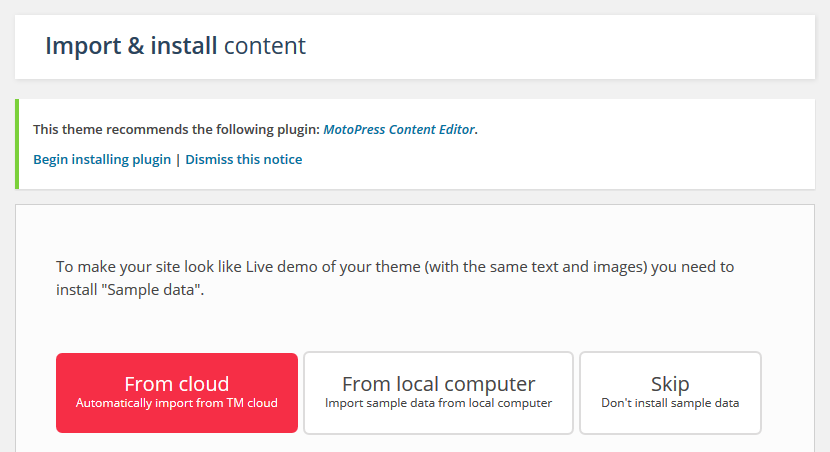
После выбора варианта установки с облака, начинается процесс скачивания
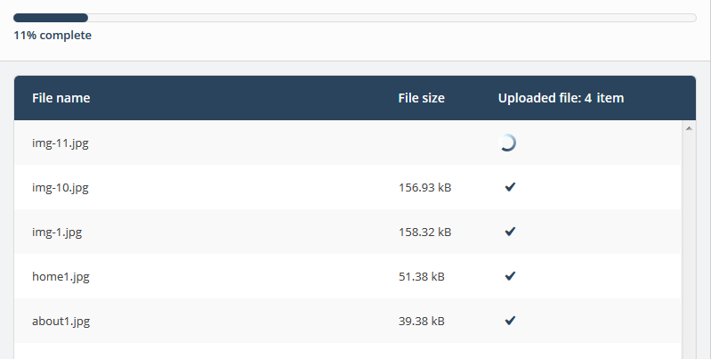
Когда все медиа-файлы скачаются, вы перейдете к установке файлов бызы данных
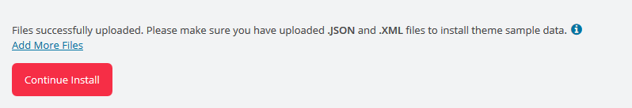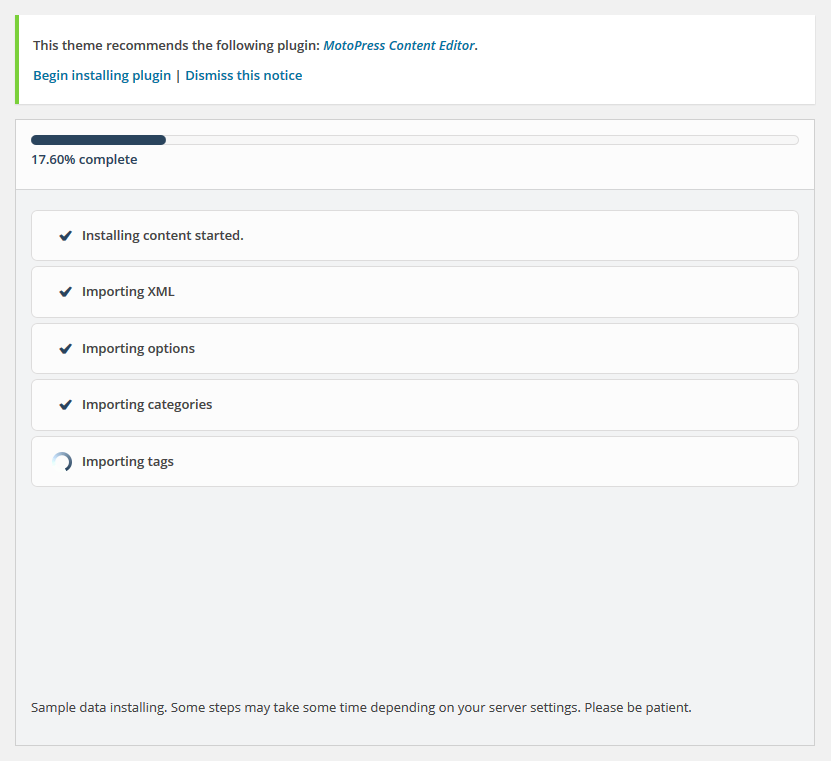
Вы успешно установили тему
Шаблоны страниц
ВНИМАНИЕ: Стили необходимо редактировать в файле style.css Если Вы предпочитаете редактировать CSS с помощью препроцессора SASS, редактирование происходит в файле main.scss (assets\scss\main.scss)
Default template
Шаблон стандартной страницы наследующей тип контейнера (WIDE / BOXED) из опций
Чтобы выбрать формат записи, откройте список Format (Формат).
Ниже находится список доступных форматов записей с описаниями и настройками.
Стандартный формат записи (Standard)
Обычная, стандартная запись имеет следующие поля:
Post title - заголовок записи
Post content - контент записи
Categories - категория (и) записи
Tags - теги записи
Featured Image - изображение записи
и другие поля, которые можно включить в разделе Screen Options (Настройки экрана) в верхнем правом углу.
Стандартный формат записи
Заметка (Aside)
Представляет собой упрощенную стандартную версию записи. Другими словами, в ней находится только поле для контента, поэтому не требуется вводить заголовок записи и другие опции.
Заметка
Аудио (Audio)
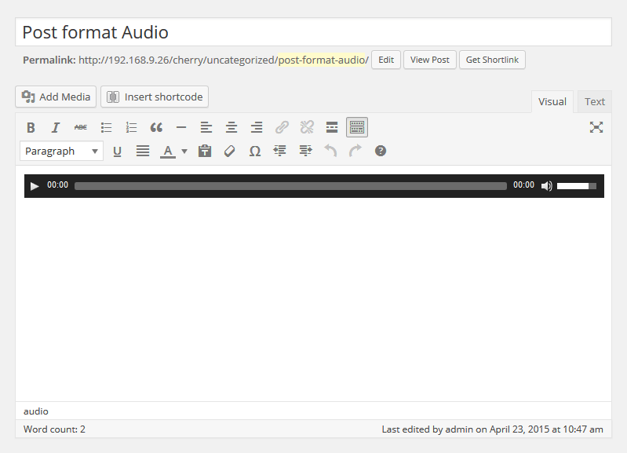
Аудио
Формат Аудио используется для публикации аудио-контента.
В дополнительных настройках файла в медиагалереи возможно редактировать следующие поля:
URL (URL аудио) - прямая ссылка на аудиотрек
Title (Заголовок) - название трека
Artist (Исполнитель) - исполнитель аудиотрека
Album (Альбом) - альбом аудиотрека
Description (Описание) - описание аудиотрека
Чат (Chat)
Структура контента
Формат Чат представляет собой пост в формате последовательных сообщения
Ann: Hello Mike!
Mike: Hello Mike!
Ann: How are you Mike?
Mike: Not bad Ann.
Галерея (Gallery)
Основной особенностью данного формата записи является возможность добавления неограниченного количества изображений.
Добавление галереи:
Нажмите кнопку Add Media (Добавить медиа). 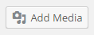
Чтобы добавить изображения с компьютера, перетяните файлы в появившееся поле или щелкните Select Files (Обзор).
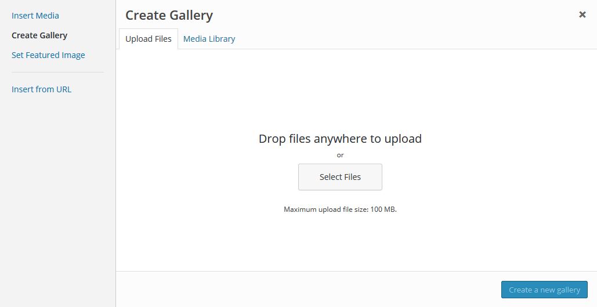
После загрузки все картинки находятся в Media Library (Медиа библиотека). Выберите Uploaded to this post (Добавленные в эту запись) для просмотра изображений.
По окончанию редактирования можно закрыть медиа библиотеку. Загруженные картинки будут добавлены автоматически.
В записях формата галерея находятся те же поля (например, заголовок, контент, категории, и т.п.), что и для стандартного формата записи.
Изображение (Image)
Изображение
Изображение - это формат записи в виде одиночного изображения, загруженного через опцию Featured Image(Изображение записи).
Выбрав данный формат, вы сможете отключить лайтбокс для изображений при помощи соответствующей настройки Enable Lightbox (Включить лайтбокс) .
Ссылка (Link)
Ссылка
Формат поста Ссылка, создается в визуальном редакторе при вставке ссылки (URL) в стандартном формате.
Заголовок записи будет использоваться в качестве текста ссылки.
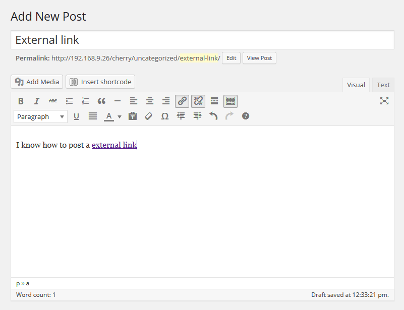
Ссылка с описанием
Кроме того, можно создать описание целевой страницы/ресурса, при этом назначить ссылку на любом фрагменте текста.
Цитата (Quote)
Цитата
Пост Цитата используется для публикации высказываний.
Статус (Status)
Статус
Пост Статус короткое сообщение обычно до 140 символов., в его роли обычно выступает содержимое записи. Выводится с аватаркой автора
Видео (Video)
Видео
Видео используется для публикации видео-контента.
Существует два способа добавления видео в пост:
Embedded Code (Встроенный код) - используется для добавления видео с внешних ресурсов, например, youtube, vimeo, и т.д.
Вставка через медиагалерею
В дополнительных настройках возможно редактировать следующие поля:
URL #1 Прямая ссылка на видеоклип в формате m4v с возможностью удаления
Альтернативный источник для загрузки различных форматов видеофайла (mp4, ogv, webm)
Задать изображение для постера к видеозаписи
Задать автоматическое проигрывание файла
Задать непрерырвное проигрывание файла
Создание записи слайдера
Слайды, по сути, являются пользовательским типом записей, что отличает их от обычных записей, например, блога. Благодаря этому, очень легко управлять контентом сайта.
Создание записи слайдера
Войдите в панель управления WordPress.
Откройте меню Slider (Слайдер) .
Нажмите вкладку Add New(Добавить новый).
Введите title (заголовок) слайдера.
Загрузите изображение в опции Featured Image (Изображение записи) (щелкните ссылку Set featured image (Установить Изображение записи)).
Для слайда можно использовать следующие поля:
Caption (Надпись) - поля для надписи слайда.
URL - поле для URL слайда (можно использовать внешнюю ссылку).
Когда настройки заданы, нажмите кнопку Publish (Опубликовать).
Добавление записи портфолио
ВНИМАНИЕ: Должен быть установлен плагин Cherry Portfolio
Элементы портфолио, по сути, являются пользовательским типом записей, http://codex.wordpress.org/Post_Types#Custom_Types что отличает их от обычных записей. Благодаря этому, очень легко управлять контентом сайта.
Добавление записей портфолио
Войдите в панель управления WordPress.
Откройте меню Portfolio (Портфолио) .
Нажмите вкладку Add New(Добавить новый).
Заполните все необходимые поля (заголовок, контент).
Загрузите изображение в опции Featured Image (Изображение записи) (щелкните ссылку Set featured image (Установить Изображение записи)).
Нажмите кнопку Publish (Опубликовать).
Выбор формата записи портфолио
Создание записи портфолио в данной теме позволяет выбрать один из доступных типов записей.
Image (Изображение) - тип записи галереи по умолчанию. Отображает только Изображение записи.
Slideshow (Слайдшоу) - проект галереи отображается в виде слайдшоу. Может содержать неограниченное количество изображений записи.
Grid Gallery (Сетка галереи) - картинки записи отображаются в виде галереи. Может вмещать неограниченное количество изображений записи.
Video (Видео) - в данном типе записи можно добавлять видео клип с любого видео хостинга (YouTube, Vimeo, и т.п.).
Audio (Аудио) - этот тип записи позволяет добавлять аудио ссылку.
Добавление записи "отзыв" (Testimonials)
ВНИМАНИЕ: Должен быть установлен плагин Cherry Testimonials
Добавление записи "отзыв" (Testimonials)
Войдите в панель управления WordPress.
Откройте меню Testimonials (Отзывы).
Нажмите вкладку Add New(Добавить новый).
Заполните все необходимые поля (заголовок, контент).
Загрузите изображение в опции Featured Image (Изображение записи) (щелкните ссылку Set featured image (Установить Изображение записи)).
В данном типе записей можно использовать следующие настройки:
Name(Имя) - имя автора
E-mail - почтовый ящик автора.
URL - ссылка автора
Нажмите кнопку Publish (Опубликовать)
Добавление записи "Наша команда" (Our Team)
Добавление записи "Наша команда" (Our Team)
Войдите в панель управления WordPress.
Откройте меню Our Team (Наша команда).
Нажмите вкладку Add New(Добавить новый).
Заполните все необходимые поля (заголовок, контент).
Загрузите изображение в опции Featured Image (Изображение записи) (щелкните ссылку Set featured image (Установить Изображение записи)).
В данном типе записей можно использовать следующие настройки:
Position (Должность) - должность человека.
Info - Дополнительная информация.
Нажмите кнопку Publish (Опубликовать)
Опции Cherry
Cherry Framework 4 contains vast number of theme configuration options. You can configure various aspects of your Wordpress website behavior and appearance. Cherry Options consists of several sections:
General
General section contains global Cherry Framework configuration settings.
Favicon image.
Icon image that is displayed in the browser address bar and browser tab heading. Max icon (.ico) size 32x32 px. You also upload favicon for retina displays. Max retina icon size: 152x152 px.
Maintenance mode
Enable/disable maintenance mode. Logged in administrator gets full access to the site, while regular visitors will be redirected to the page chosen below. You can also preview the maintenance page without enabling maintenance mode.
Maintenance page
Select a page that regular visitors will see if maintenance mode is enabled. You can select any Wordpress page here including your custom ones.
Use static area editor to arrange static blocks. You can drag-n-drop static blocks, remove them or add new ones using 'Create new static' field below.
There are several static areas available with self-explaining names:
Header top
Header left
Header right
Header bottom
Slider area
Footer top
Footer bottom
You can use "Create new static" section to add new static items to static areas. By default static item will be added to the first static area. You can drag it to desired static area later.
You can also configure the grid settings for each static element and assign custom classes. Column class settings define the static item width according to Bootstrap 12 column markup grid:
.col-xs-*: - width for displays with horizontal screen resolution less than 768px
.col-sm-*: - width for displays with horizontal screen resolution more or equal to 768px
.col-md-*: - width for displays with horizontal screen resolution more or equal to 992px
.col-lg-*: - width for displays with horizontal screen resolution more or equal to 1200px
The following video tutorial will demonstrate the main aspects of Static Editor.
Grid
Section contains global layout configuration settings.
Enable/disable responsive grid. If for any reason you want to disable responsive layout for your site, you are able to turn it off here.', 'cherry
Layout
Select blog page layout. You can choose if you want to display sidebars and how you want to display them.
Container width
Width of main website container in pixels.
Blog
Section contains settings for Wordpress blog pages (listing, single post, post types).
Featured Media
Displays Featured Image, Gallery, Audio, Video in blog posts listing depending on post type.
Featured Image Size
Set dimensions for post featured images in pixels.
Featured Image Alignment
Set alignment for post featured images.
Post content
Select how you want to display post content in your blog listing: full - display fill post content, part - display part of the post (you can specify post part size below), none - hide post content.
Excerpt length
Specify number of words displayed as post part in blog listing.
More button
Enable/Disable "read more" button in blog listing.
More button label
Specify "read more" button label text.
Blog > Meta
Date
Show/Hide post publication date.
Author
Show/Hide post author.
Comments
Show/Hide number of comments.
Categories
Show/Hide post categories.
Tags
Show/Hide post tags.
Blog > Post
Featured Image
Display featured image at the single post page.
Featured Image Size
Set dimensions for single post featured images in pixels.
Featured Image Alignment
Set alignment for single post featured images.
Author Bio
Enable/disable author bio block. Author bio block is displayed on the post page.
Related posts
Enable/disable related posts block. Related posts block is displayed at the post page.
Allow Comments
Enable/disable comments for blog posts. Make sure comments are enabled in Wordpress \'settings->discussion\'. For posts that have already been published you need to enable comments individually in post settings.
Gallery Slider
Replace default Wordpress gallery shortcode with enhanced jQuery carousel.
Lightbox for images and videos
Adds lightbox for images and videos.
Styling
Section contains theme styling settings. Here you can edit main theme colors.
Body background
Set background for body container. You can specify background image or color, set background repeat, position and attachment.
Color themes
Changes colors for various theme elements like forms, typography elements, blocks with default styling etc.
Primary color
Secondary color
Success color
Info color
Warning color
Danger color
Primary gray color
Select main gray color hue. Additional colors will be created automatically:
gray-darker: darken(20%)
gray-dark: darken(15%)
gray-light: lighten(15%)
gray-lighter: lighten(20%)
Navigation
Define website navigation settings. Menus typography and colors, pagination and breadcrumbs settings
.
Header Menu Typography
Main header navigation typography settings. You can configure menu font and color.
Footer Menu Typography
Main footer navigation typography settings. You can configure menu font and color.
Header background settings. You can select background color, upload header background image, set its background position, attachment and repeat.
Grid type
Select layout pattern for header website. Wide layout will fit window width. Boxed layout will have fixed width.
Boxed width
Header section width if boxed layout is active. Should not be more than Grid -> Container width value.
Sticky header
Enable\disable fixed stick to top header.
Sticky selector
Select the block selector that will be used to build sticky panel. You can use tag name, class name, or id.
Header Logo
Logo type
Select whether you want your main logo to be an image or text. If you select 'image' you can choose a logo image from the media library in the next option, and if you select 'text' your Wordpress Site Title will be shown instead.
Image
Click Choose Media button to select logo image from the media library or upload your image.
Logo typography
Configuration settings for text logo. Here you can select logo font family, size, color etc.
Page
General page options section.
Background
Page background settings. You can select background color, upload footer background image, set its background position, attachment and repeat.
Grid type
Select layout pattern for main website container. Wide layout will fit window width. Boxed layout will have fixed width and left/right indents.
Boxed width
Header section width if boxed layout is active. Should not be more than Grid -> Container width value.
Featured Images
Enable/disable featured images for pages.
Page comments
Enable/disable comments by default for pages. For pages that have already been published you need to enable comments individually in page settings.
Footer background settings. You can select background color, upload footer background image, set its background position, attachment and repeat.
Typography
Typography settings for footer texts.
Grid type
Select layout pattern for footer website. Wide layout will fit window width. Boxed layout will have fixed width.
Boxed width
Header section width if boxed layout is active. Should not be more than Grid -> Container width value.
Footer Info text
Set custom text for Footer info static
Footer Logo
Logo type
Select whether you want your main logo to be an image or text. If you select 'image' you can choose a logo image from the media library in the next option, and if you select 'text' your Wordpress Site Title will be shown instead.
Image
Click Choose Media button to select logo image from the media library or upload your image.
Logo typography
Configuration settings for text logo. Here you can select logo font family, size, color etc.
Typography
Theme typography settings. You can configure all aspects of website typography, fonts, colors etc.
Body text
Main website text typography options.
Link typography
Typography for links.
Link hover color
Color for links on hover.
Input text
Styling text in forms.
Breadcrumbs typography
Styling text in breadcrumbs.
Heading 1
H1 heading font settings.
Heading 2
H2 heading font settings.
Heading 3
H3 heading font settings.
Heading 4
H4 heading font settings.
Heading 5
H5 heading font settings.
Heading 6
H6 heading font settings.
Optmization
Concatenate/minify CSS
Select if you want to merge minify CSS files for performance optimization.
Dynamic CSS output
Output dynamic CSS into separate file or into style tag.
Шорткоды
Шорткоды - мощный инструмент управления контентом (learn more). Они очень просты в использовании. Прежде всего, нужно выбрать режим редактирования Visual (Визуальный).
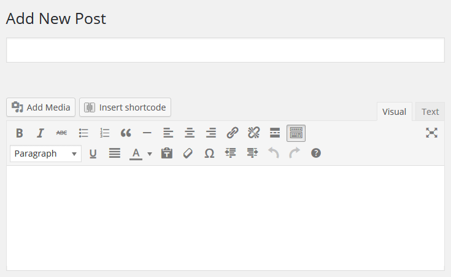
Нажмите на кнопку Insert shortcode. После этого, выберите нужный шорткод.
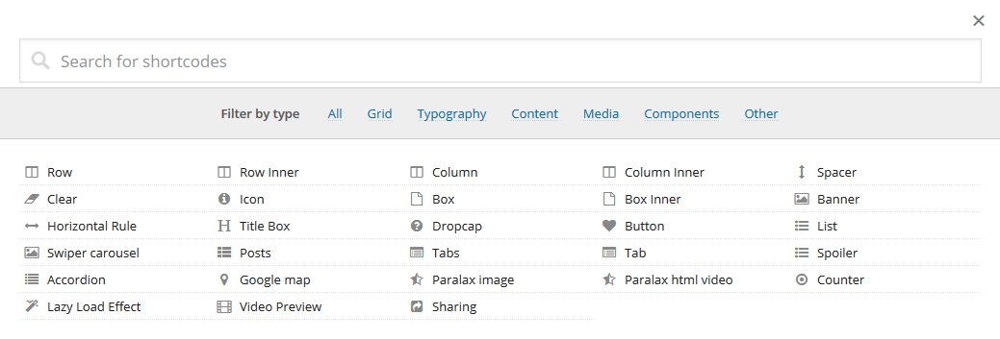
Все шорткоды условно делятся на следующие группы:
Box - используются для вывода контейнеров и элементов форматирования колонки и для сетки.
Content - Элементы оформления интерфейса -
Media - дополнительные элементы контента.
Gallery - дополнительные элементы контента.
Data - дополнительные элементы контента.
Other - вспомогательные элементы расширенного управления контентом.
Описание: При создании сетки необходимо "оборачивать" ее элементы в шорткод [row], у него есть два дополнительных параметра - тип контейнера, пользовательский класс
Typography
Text
Content
Text
Media
Text
Components
Lazy Load Effect
Описание: Данный шорткод позволяет плавно отображать появление элементов контента при скроллинге страницы.
start position: - начальная позиция элемента при старте анимации
out rotation: - значенние начального угла поворота для вращения элемента при старте анимации (min -360° max 360°)
flip X: - значенние начального угла поворота для вращения по оси X элемента при старте анимации (min -360° max 360°)
flip Y: - значенние начального угла поворота для вращения по оси Y элемента при старте анимации(min -360° max 360°)
pivot: - значенние относительной точки вращения элемента
scale: - значенние масштабирования элемента (min: 0; max 10;)
opacity: - значенние прозрачности элемента (min - 0; max 1;)
easing: - эффект затухания анимации элемента
animation speed: - скорость анимации (в секундах), принимает значение с плавающей точкой
animation delay: - задержка перед появлением элемента (можно использовать, если у вас 2-3 элемента в ряд и вы хотите анимировать их не одновременно, а один за другим)
custom_class: - пользовательский класс шорткода
Other
Text
Плагины
Поскольку фреймворк разработан на основе модульной структуры, функциональные возможности темы расширяются с помощью плагинов.
Shortcode Template Editor
Плагин для создания уникального шаблона вывода шорткода
Войдите в панель управления WordPress.
Откройте вкладку Appearance (Внешний вид).
Перейдите в Shortcodes Templater
Если вы не создавали собственных шаблонов перед Вами выводится только приветсвие
Для начала выберите интересующий Вас шорткод и нажмите Add new
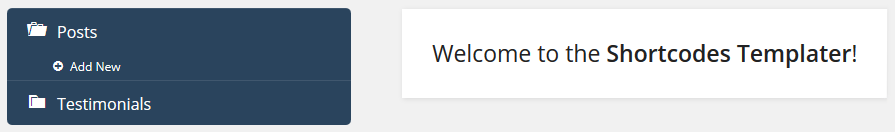
После нажатия вы создаете новый шаблон на основе шаблона по умолчанию, ему будет присвоено имя с порядковым преффиксом и названием шорткода в формате [Shortcode Name][N], пример post_1.
Имя шаблона отображается в списке а также в заголовке визуального редактора. Шаблон сохраняется и физически хранится в директории: \wp-content\themes\cherryframework4\templates\shortcodes\
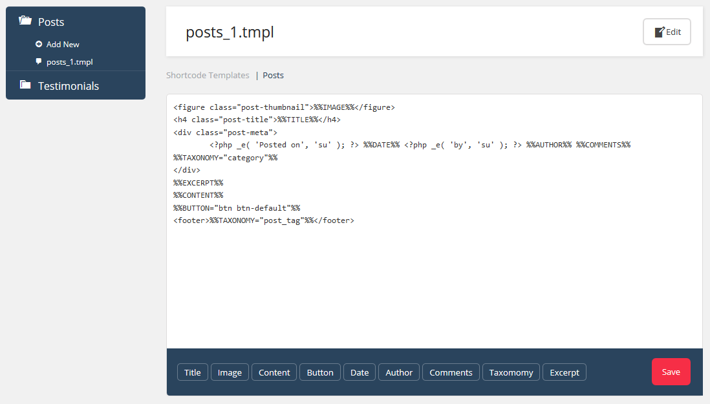
У вас есть возможность переименовать, копировать, удалить шаблон. При копировании Duplicate шаблона ему будет присвоено имя с порядковым преффиксом по аналогии с созданием нового, но с структурой текущего а не шаблона по умолчанию
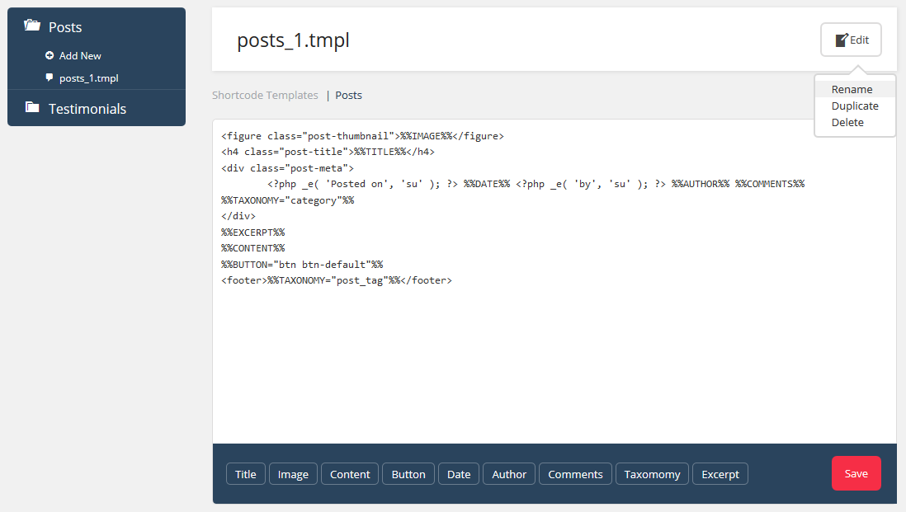
Редактор позволяет Вам создать собственую разметку, выводить необходимые (Mакросы). А в некоторых задавать параметры вывода. Например, нажав на кнопку Content вы сгенерируете макрос %%CONTENT%% который выведет на сайте содержимое контента поста
Shortcodes Ultimate
Плагин для работы с шорткодами, по умолчанию используются предустановленные, документация по которым доступна здесь. Кроме того, модифицированные и новые шорткоды описаны в разделе Шорткоды
Войдите в панель управления WordPress.
Откройте вкладку Posts (Записи).
Перейдите в Add New (Добавить новую)
Cherry Social
Плагин для размещения на станицах вашего сайта sharing и follow списков
Выберите социальную сеть для возможности поделится
Facebook URL - ссылка на страницу Facebook.
Twitter - ссылка на страницу Twitter.
Google+ URL - ссылка на страницу Google+.
Pinterest URL - ссылка на страницу Pinterest.
Linkedin URL - ссылка на страницу Linkedin.
Tumblr - ссылка на страницу Tumblr
StumbleUpon - ссылка на страницу StumbleUpon
Reddit - ссылка на страницу Reddit
Заголок который используется для вывода в static item
Настройка списка социальный аккаунтов с возможностью редактирования URL / назначение иконки / редактирования заголовка.
Кроме того, возможно создать и удалить
Services Plugin
Плагин добавляет новый тип поста "services". Посты типа "services" имеют дополнительные настройки для формирования привлекательных блоков описания услуг. работа с services происходит таким же образом каки раьота с постами. Посты services можно группировать в категории для более удобной навигации.
После установки и активации плагина в главном меню администраитовной панели WordPress вы увидите пункт Services, где сможете начать работу с постами и категориями services.
Пост типа service имеет следующие настройки:
Font icon CSS class - класс иконки блока опсания услуги.
Service features description - краткое описание услуги.
Price - цена.
URL to order this service - ссылка услуги.
Is featured service - является ли услуга популярной.
Charts Plugin
Плагин Charts предназначен для создания различного рода диаграмм и графиков. Богатая коллекция доступных типов диаграмм и широкие настройки позволят создать диаграмму, полностью подходящую под ваши нужды.
После установки и активации плагина в главном меню администраитовной панели WordPress вы увидите пункт Charts, где сможете начать работу с диаграммами.
Для создания новой диаграммы выберите пункт навигации "Charts > Add New Chart". На странице настройки диаграммы введите название диаграммы и задайте необходимые настройки.
Вам доступны 4 типа диаграмм: progress bar, pie, doughnut, bar. Выбрать необходимый можно в поле Chart type. В зависимости от выбранного типа диаграммы меняются настройки. Рассмотрим каждый подробнее.
Для типа progress bar доступны следующие настройки:
Progress bar type - выберите тип progress bar. Может быть круговая (radial), горзонтальная и вертикальная.
Inner cutout percentage (только для круговой) - размер внутреннего контура.
Width - ширина диаграммы.
Height - высота диаграммы.
Content settings
Progress bar template - выберите шаблон диаграммы.
Chart icon - выберите класс иконки диаграммы
Chart icon size - выберите размер иконки
Chart icon color - выберите цвет иконки диаграммы
Chart data
Вы этом разделе вы можете ввести данные для отображение диаграммы.
Pie и doughnut
Chart settings
Для типа progress bar доступны следующие настройки:
Width - ширина диаграммы.
Height - высота диаграммы.
Content settings
Show chart title - показывать заголовок диаграммы.
Show chart label - показывать label диаграммы.
Show chart legend - показывать легенду диаграммы.
Chart data
Вы этом разделе вы можете ввести данные для отображение диаграммы.
Bar
Настройки диаграммы bar совападают с pie и doughnut, описанными выше. Отичается только таблица данных диаграммы.
Chart data
Вы этом разделе вы можете ввести данные для отображение диаграммы.
Chart Style
В этом разделе вы можете настроит цветовое оформление диаграммы по вашему вкусу. Можно менять цвет элементов, фон, прозрачность элементов, толщину линий и их цвет.
После завершения настройки диаграммы, вы можете вставить её в тело поста или страницы, используя shortcode.
Cherry Data Manager
Data Manager плагин служит для импорта/экспорта данных сайта.
Export
Экспорт используется для переноса данных сайта с одного сервера на другой или для создания резервных копий. Для экспорта перейдите на страницу "Tools > Cherry Export" и нажмите кнопку "Export Content". В результате вы получите архив с данными сайта.
Import
Перейдите в меню Tools > Cherry Import (Импорт контента).
Если все настройки сервера в порядке, появится экран загрузки. Откройте папку "theme/sample_data" шаблона и загрузите все файлы в WordPress. Все файлы в папке "theme/sample_data" нужно выделить (горячие клавиши CTRL+A или Command+A) и перетянуть в поле загрузки.
Загрузите все файлы из папки sample_data, в том числе .JSON и .XML. По завершению загрузки нажмите кнопку "Continue Install (Продолжить установку)".
ВНИМАНИЕ: Файлы .JSON и .XML являются обязательными при установке демо-данных. Кнопка Continue Install (Продолжить установку) станет активна только после загрузки файлов .XML и .JSON.
Кнопка "Continue Install (Продолжить установку)" начнет процесс установки демо-данных. Установка займет определенное время в зависимости от настроек сервера. Пожалуйста, дождитесь ее окончания.
Поздравляем! Вы успешно установили тему Cherry WordPress и теперь можете проверить, как она выглядит.
Team Plugin
Плагин добавляет новый тип поста "team". Посты типа "team" имеют дополнительные настройки для формирования записей о членах вашей команды. Работа с team происходит таким же образом каки работа с постами. Посты team можно группировать в категории (groups) для более удобной навигации.
После установки и активации плагина в главном меню административной панели WordPress вы увидите пункт Team, где сможете начать работу с постами и категориями services.
Плагин добавляет новый тип поста "testimonials". Посты типа "testimonials" имеют дополнительные настройки для формирования отзывов о вашем сайте/организации/товаре. Работа с testimonials происходит таким же образом каки работа с постами.
После установки и активации плагина в главном меню административной панели WordPress вы увидите пункт Testimonials, где сможете начать работу с постами testimonials.
Плагин добавляет новый тип поста "portfolio". Посты типа "portfolio" имеют дополнительные настройки для формирования портфолио. Работа с portfolio происходит таким же образом каки работа с постами. Посты portfolio можно группировать в категории и добавлять теги для более удобной навигации.
После установки и активации плагина в главном меню административной панели WordPress вы увидите пункт portfolio, где сможете начать работу с постами и категориями portfolio.
Пост типа team имеет следующие настройки:
External-link - ссылка на внешний ресурс
Link text - текст ссылки
Zoom image - активация опции zoom для изображений
Mega Menu
Плагин позволяет создавать многоколоночные выпадающие меню. Возможности плагина позволяют вывести всю необходимую информацию в главное меню для удобства пользователя.
После установки и активации плагина, получить доступ к MegaMenu в пункте "Appearance > Menus" главного меню административной панели WordPress. Наведите курсор мыши на пункт меню и нажмите на иконку Mega Menu.
В появившемся окне вы сможете начать работу с MegaMenu.
Для активации функционала MegaMenu для этого пункта меню нажмите "Enable Mega Menu for current item".
Mega Menu
В разделе MegaMenu вы можете размещать необходимые виджеты в выпадающем блоке для текущего пункта меню. Для каждого виджета можно выбрать ширину.
Для пунтка меню вы можете настроить следующие параметры:
Group sub items to columns - группировать пункты подменю в колонки
Columns number - кол-во колонок мегаменю
Submenu position - размещение подменю
Item width - ширина мегаменю для различных разрешений
Hide submenu on mobile - скрывать подменю на мобильных разрешениях
Media
Позволяет настроить иконки пункта меню. В этом разделе вы можете выбрать иконку пункта меню, выбрать вариант стрелки, скрыть текст меню и скрыть стрелку.
Simple Slider
Плагин добавляет новый тип поста "slides". Посты типа "slides" имеют дополнительные настройки для формирования слайдеров изображений. Работа с slides происходит таким же образом каки работа с постами. Посты slides можно группировать в категории (sliders) для более удобной навигации.
После установки и активации плагина в главном меню административной панели WordPress вы увидите пункт Slides List, где сможете начать работу с постами и категориями slides.
Content wrapper - оборачивать контент в дополнительный блок
Cherry Lazy Load
Text
Full Bg Slider
Text
Cherry Media Parallax Plugin
Text
Cherry Single Carousel
Text
Third-party Plugins
Text
FAQ
Установка движка
Скачайте требуемую версию движка WordPress. Ее можно увидеть на странице предпросмотра шаблона в списке требований. Убедитесь, что вы скачиваете требуемую версию.
Движок WordPress можно скачать на официальном сайте WordPress.org Скачать WordPress. Если нужна более ранняя версия, нажмите ссылку Архивы версий.
После скачивания необходимо распаковать файлы движка и шаблона. Чтобы разархивировать файл ZIP движка WordPress, можно использовать любой архиватор, поддерживающий формат ZIP.
После разархивирования файлы и папки движка WordPress нужно загрузить на хостинг сервер.
Загружать на сервер нужно все файлы и папки в директорию PUBLIC_HTML или WWW.
Если вы не можете найти директории PUBLIC_HTML или WWW на хостинг сервере, обратитесь к хостинг провайдеру и уточните, куда нужно загружать файлы веб-сайта.
Вы также можете воспользоваться данными туториалами для более детальной информации о том, как загружать файлы на сервер:
Пропишите путь к директории WordPress в адресной строке браузера и нажмите клавишу Enter. После этого начнется процедура установки.
Создание файла конфигурации. На экране установки WordPress появится сообщение, что отсутствует файл конфигурации. Нажмите кнопку "Create Configuration File (Создать файл конфигурации)", чтобы создать его.
Детали базы данных. Здесь нужно ввести детали подключения к базе данных WordPress.
Детали веб-сайта. На данном экране нужно ввести следующие детали:
В случае возникновения сложностей при установке демо-данных воспользуйтесь следующими инструкциями.
ВНИМАНИЕ: Импорт файла SQL в базу данных перезапишет существующий контент и настройки веб-сайта. НЕ импортируйте файл SQL, если нужно сохранить текущий контент.
ПАМЯТКА: Всегда делайте резервное копирование базы данных, прежде чем приступить к изменениям.
Префикс таблиц базы данных WordPress должен быть wp_.
Ручная установка
В случае возникновения сложностей при установке через панель управления, можно воспользоваться альтернативным способом.
Загрузка через FTP:
Для использования данного метода, нужно иметь доступ к файлам WordPress на FTP сервере через файловый менеджер контрольной панели хостинга или FTP-клиент, например Filezilla, CuteFTP, Total Commander, и т.п.
Если вы установили тему с демо-данными или вручную, а тема отличается от демо, откройте Cherry Options (Опции Cherry) и нажмите "Restore Defaults (Восстановить настройки по умолчанию)."
Разархивируйте файлы CherryFramework.zip и theme####.zip в папку на компьютере (щелкните правой кнопкой по каждому файлу.zip, выберите Unzip to… (Распаковать в ...) CherryFramework и theme#### соответственно, после чего появятся две папки: CherryFramework и theme####).
Загрузите папки CherryFramework и theme### в директорию /wp-content/themes/ на FTP сервере.
Войдите в панель управления WordPress (добавьте /wp-admin к доменному имени сайта в адресной строке браузера).
Перейдите в меню Appearance (Внешний вид) > Themes(Темы).
В разделе Available Themes (Доступные темы) найдите theme#### и активируйте ее, щелкнув по кнопке Activate (Активировать).
Установка Sample Data
Чтобы веб-сайт WordPress выглядел как на демо, следуйте данным инструкциям.
Тема должна быть установлена согласно следующим указаниям.
Скопируйте папку "uploads" (она находится в папке theme/manual_install/ шаблона) в папку /wp-content/ на FTP сервере.
Откройте файл theme####.sql из папки theme/manual_install/ в любом текстовом редакторе (рекомендуется Dreamweaver или Notepad) и замените все строки "your_website_url_here" на URL вашего веб-сайта в документе при помощи опции Find and Replace (Найти и Заменить) (окно вызывается горячими клавишами Ctrl+H). Например: http://www.mywebsite.com
В конце адреса не должно быть знака косой черты "/" и url должен начинаться с http://www.
Сохраните изменения и закройте файл.
Теперь файл дампа можно импортировать через phpMyAdmin или другой инструмент управления базами данных.
Установка базы данных вручную
В случае возникновения сложностей при установке демо-данных воспользуйтесь следующими инструкциями.
ВНИМАНИЕ: Импорт файла SQL в базу данных перезапишет существующий контент и настройки веб-сайта. НЕ импортируйте файл SQL, если нужно сохранить текущий контент.
ПАМЯТКА: Всегда делайте резервное копирование базы данных, прежде чем приступить к изменениям.
Префикс таблиц базы данных WordPress должен быть wp_.
Чтобы веб-сайт WordPress выглядел как на демо, следуйте данным инструкциям.
Тема должна быть установлена согласно следующим указаниям.
Скопируйте папку "uploads" (она находится в папке theme/manual_install/ шаблона) в папку /wp-content/ на FTP сервере.
Откройте файл theme####.sql из папки theme/manual_install/ в любом текстовом редакторе (рекомендуется Dreamweaver или Notepad) и замените все строки "your_website_url_here" на URL вашего веб-сайта в документе при помощи опции Find and Replace (Найти и Заменить) (окно вызывается горячими клавишами Ctrl+H). Например: http://www.mywebsite.com
В конце адреса не должно быть знака косой черты "/" и url должен начинаться с http://www.
Сохраните изменения и закройте файл.
Теперь файл дампа можно импортировать через phpMyAdmin или другой инструмент управления базами данных.
В случае возникновения сложностей при установке через панель управления, можно воспользоваться альтернативным способом.
Загрузка через FTP:
Для использования данного метода, нужно иметь доступ к файлам WordPress на FTP сервере через файловый менеджер контрольной панели хостинга или FTP-клиент, например Filezilla, CuteFTP, Total Commander, и т.п.
Если вы установили тему с демо-данными или вручную, а тема отличается от демо, откройте Cherry Options (Опции Cherry) и нажмите "Restore Defaults (Восстановить настройки по умолчанию)."
Разархивируйте файлы CherryFramework.zip и theme####.zip в папку на компьютере (щелкните правой кнопкой по каждому файлу.zip, выберите Unzip to… (Распаковать в ...) CherryFramework и theme#### соответственно, после чего появятся две папки: CherryFramework и theme####).
Загрузите папки CherryFramework и theme### в директорию /wp-content/themes/ на FTP сервере.
Войдите в панель управления WordPress (добавьте /wp-admin к доменному имени сайта в адресной строке браузера).
Перейдите в меню Appearance (Внешний вид) > Themes(Темы).
В разделе Available Themes (Доступные темы) найдите theme#### и активируйте ее, щелкнув по кнопке Activate (Активировать).
Установка плагинов
После установки и активации темы иногда требуется установить дополнительные плагины:
Если тема установлена и активирована, то в левой верхней части страницы вы увидите уведомление с рекомендацией установить плагины. Перейдите по ссылке Begin installing plugin (Начать установку плагинов). Также вы можете установить плагины выбрав в меню пункт Appearance- > Install Plugins (Внешний вид - > Установить Плагины)
Отметьте нужные плагины.
В выпадающем меню Bulk Actions (Массовые Действия) выберите Install и нажмите кнопку Apply (Применить).
Дополнение
Мы постарались сделать данную документацию как можно более доступной и понятной. Тем не менее, в случае возникновения любых сложностей с WordPress шаблоном, предложений по улучшению шаблонов или документации, с командой технической поддержки можно связаться следующим образом:
WordPress. Прeдупреждение об использовании cookies
По закону ЕС о Cookies Вы должны добавить на Ваш сайт модуль, который будет отображать предупреждение о cookies, используемых на сайте. Мы рекомендуем следующие модули:
В случае некорректного отображения веб-шрифтов после установки, откройте для редактирования файл .... шаблона .....
Далее найдите строку вида "...." и измените ее на строку вида "....".


{kind=link}


{kind=link}
{kind=link}
{kind=link}
{kind=link}


{kind=link}


{kind=link}
{kind=link}
{kind=link}


{kind=link}